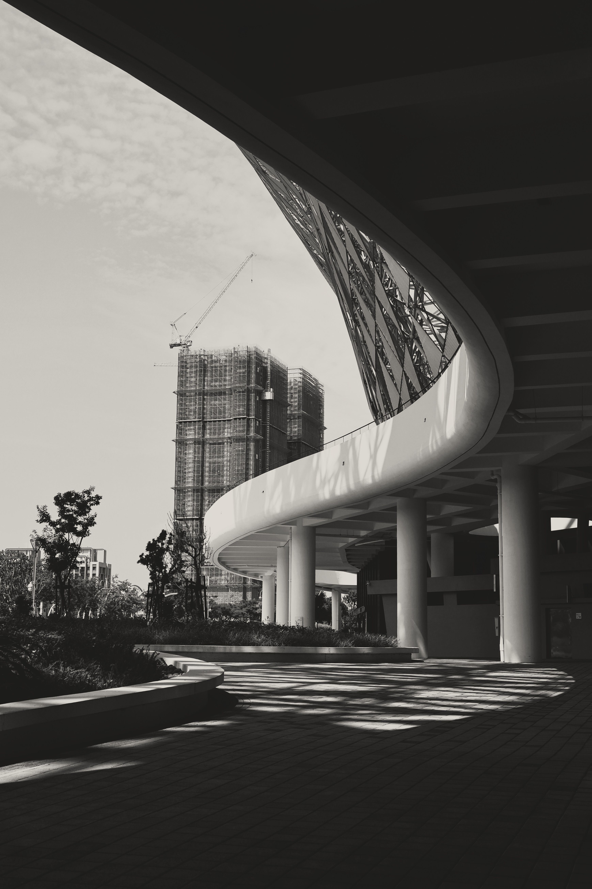
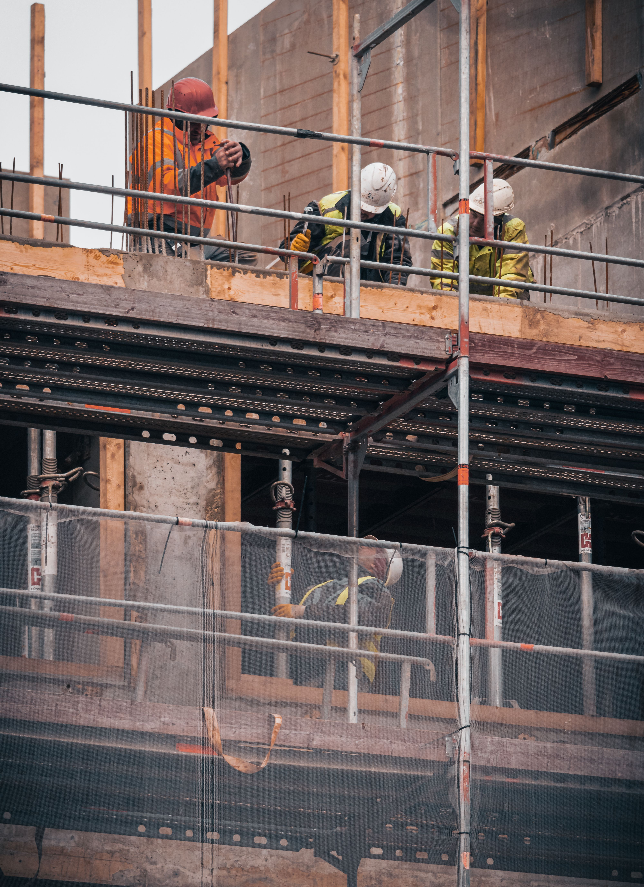
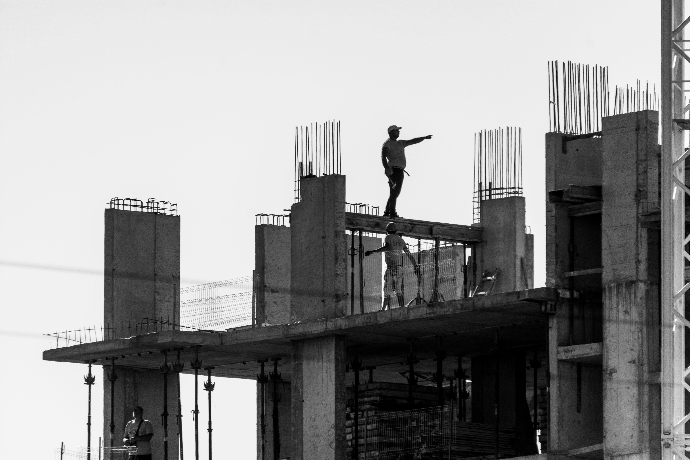
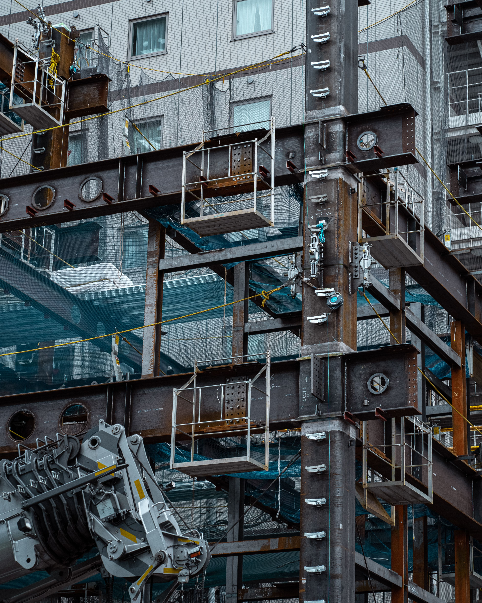
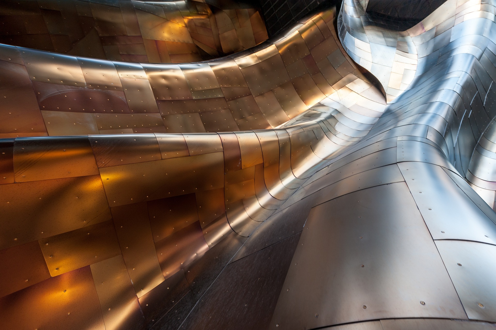

ConstructionFrom Drawing to Structure: The Direct Studio-Site Bridge
How eliminating the barrier between the drafting table and the concrete pour produces buildings of uncompromised tectonic precision.
44 Harrington Road, Chetpet
Chennai, Tamil Nadu 600031
India

Architecture / Material / Construction / Culture / Research
Why contemporary digital architecture requires a renewed confrontation with raw geological weight, thermal inertia, and ancient masonry crafts.
Dispatches from our construction sites, bioclimatic simulations, and material testing laboratory.

ConstructionHow eliminating the barrier between the drafting table and the concrete pour produces buildings of uncompromised tectonic precision.

ArchitectureExploring daylight not as accidental illumination, but as a primary structural element that sculpts space across daily cycles.

ResearchSynthesizing regional courtyard wisdom with computational fluid dynamics to achieve zero-energy thermal comfort.

MaterialDocumenting our experimentation with reclaimed timber formwork grains and pozzolanic mineral admixtures.

StructureWhy the intersection between distinct materials should never be hidden behind plaster trims or caulking.
 Studio
Studio
How carving basswood and casting plaster reveals spatial truths that digital wireframes conceal.
“When we build with stone, we do not merely erect partitions; we engage geological time. Stone absorbs the radiant solar heat of the day and gently releases ambient coolness across deep courtyard colonnades.”